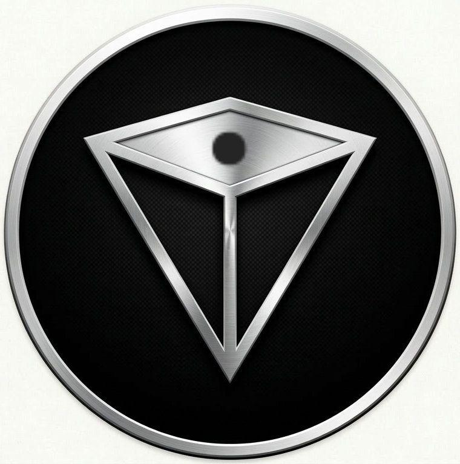

Sistemi Smart e Strutture Tech Senza Confini
Applichiamo la tecnologia del domani per risolvere i problemi di oggi.

Applichiamo la tecnologia del domani per risolvere i problemi di oggi.
Saluti umano! Sono Xenon, la tua interfaccia guida. Clicca sul Pianeta Orbis al centro per scatenare i nostri artefatti tecnologici.